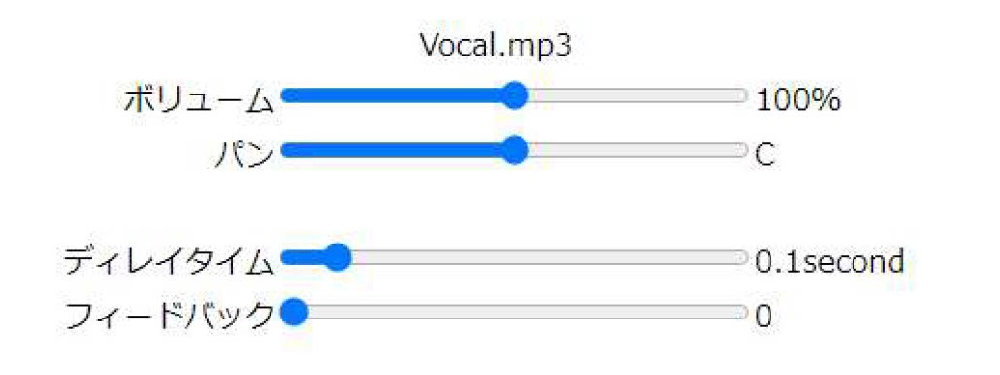

パラメーター
ディレイのパラメーターには2つあり、ディレイタイム、フィードバックがある。
ディレイタイムは0～1秒まで0.01刻み
フィードバックは0～0.9まで0.1刻みで調整できます。

ディレイの解説
ディレイは、やまびこのような音が返ってくる効果を与えるエフェクターです。
ミックスダウンにおいてのディレイは、隙間を埋めるためや空間の広さを演出するために使われます。
各パラメーターの説明をします。
ディレイタイムは、音を発してその音がどの程度遅れて返ってくるかの時間を表します。
隙間を埋めるために使われるディレイは、ディレイタイムを遅くして使い、空間の広さを演出するために使われるディレイは、ディレイタイムを早くして使います。
フィードバックは、どの程度の音量で音が小さくなって返ってくるかの値です。
フィードバックは、曲のジャンルや曲の中の展開でも値が変わってきます。
例えば、激しい曲調の曲ではフィードバックの値を大きくして迫力を出すことや、静かな曲調ではフィードバックの値を小さくして、やわらかい雰囲気を出すなどができます。
プリセットの設定について説明する。
ボーカルは、ディレイタイムはBPM120の曲に合わせて0.25秒にしています。
フィードバックは、薄くかけてあげることであまり目立たせずに空間を演出するようにしています。
どのような変化があるのかを確かめてみましょう。
「Bypass」のボタンを押してディレイの効果をオフにしてみましょう。
その状態で再生してみると、目の前ではりついた音で狭い部屋で演奏しているようなイメージになります。
このような状態をディレイでやまびこ効果を与えることで、広い部屋で演奏しているような豊かな響きを演出できます。
トップページに戻る